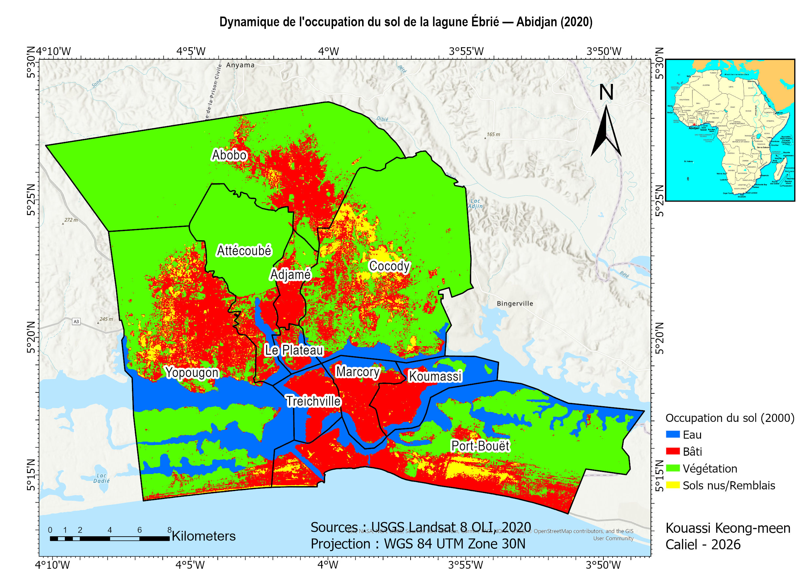
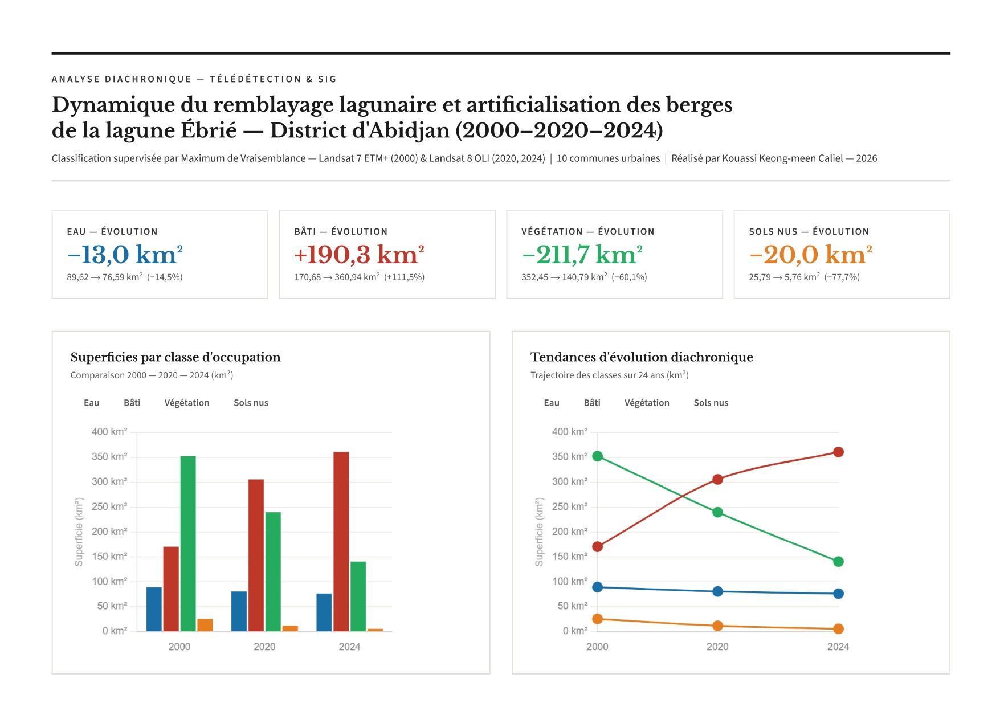
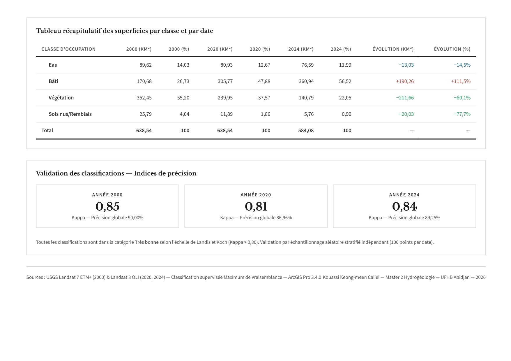

Résultats cartographiques
Cartes d'occupation du sol — 2000, 2020, 2024

Occupation du sol — 2000
Landsat 7 ETM+ · κ = 0,85

Occupation du sol — 2020
Landsat 8 OLI · κ = 0,81
Occupation du sol — 2024
Landsat 8 OLI · κ = 0,84
Projet Portfolio — 2026
Analyse diachronique 2000 – 2020 – 2024 — 10 communes riveraines du District d'Abidjan
Contexte & Problématique
La lagune Ébrié, principal plan d'eau du district d'Abidjan, subit depuis plusieurs décennies une pression anthropique croissante liée à l'urbanisation rapide de la métropole ivoirienne. Les activités de remblaiement des berges, l'expansion du tissu urbain et la déforestation intensive menacent l'intégrité de cet écosystème lagunaire essentiel.
Cette étude vise à quantifier et cartographier l'évolution de l'occupation du sol sur les 10 communes riveraines de la lagune entre 2000 et 2024, en mobilisant les techniques de télédétection et de SIG pour produire une analyse diachronique rigoureuse et scientifiquement validée.
Zone d'étude : 10 communes urbaines riveraines — Abobo, Adjamé, Attécoubé, Cocody, Koumassi, Marcory, Le Plateau, Port-Bouët, Treichville, Yopougon — couvrant environ 638 km² de surface analysée.
Approche méthodologique
Téléchargement sur USGS Earth Explorer — Landsat 7 ETM+ (2000) et Landsat 8 OLI (2020, 2024) — Collection 2 Level-2 (corrections atmosphériques incluses) — scènes 195/056 et 196/056. Critère : couverture nuageuse < 20%, saison sèche.
Composition de bandes infrarouge couleur (B5-B4-B3 pour Landsat 8), mosaïquage des deux scènes par Mosaic To New Raster (opérateur FIRST), découpage sur les 10 communes (Clip Raster — ArcGIS Pro 3.4.0).
4 classes harmonisées pour les 3 dates : Eau, Bâti, Végétation, Sols nus/Remblais. Échantillons d'entraînement via Training Samples Manager (ArcGIS Pro 3.4.0). Classification indépendante par date avec nomenclature unifiée.
200 points aléatoires stratifiés indépendants par date (Extract Multi Values to Points). Vérification visuelle sur Google Earth Pro (images historiques). Calcul des matrices de confusion et indices de Kappa sous Microsoft Excel.
Build Raster Attribute Table (ArcGIS Pro) pour les comptages de pixels. Calcul des superficies : Count × 0,0009 km² (résolution Landsat 30m). Analyse comparative des changements entre les trois dates.
Résultats cartographiques
Occupation du sol — 2000
Landsat 7 ETM+ · κ = 0,85

Occupation du sol — 2020
Landsat 8 OLI · κ = 0,81
Occupation du sol — 2024
Landsat 8 OLI · κ = 0,84
Résultats quantitatifs
| Classe | 2000 (km²) | 2000 (%) | 2020 (km²) | 2020 (%) | 2024 (km²) | 2024 (%) | Évolution |
|---|---|---|---|---|---|---|---|
| Eau | 89,62 | 14,03% | 80,93 | 12,67% | 76,59 | 11,99% | −13,03 km² |
| Bâti | 170,68 | 26,73% | 305,77 | 47,88% | 360,94 | 56,52% | +190,26 km² |
| Végétation | 352,45 | 55,20% | 239,95 | 37,57% | 140,79 | 22,05% | −211,66 km² |
| Sols nus/Remblais | 25,79 | 4,04% | 11,89 | 1,86% | 5,76 | 0,90% | −20,03 km² |

Graphique comparatif des superficies par classe d'occupation du sol (2000–2020–2024)

Tendances d'évolution diachronique — trajectoire des classes sur 24 ans
Trois tendances majeures : (1) L'urbanisation explose — le bâti est multiplié par 2,1 en 24 ans (+111,5%). (2) La végétation s'effondre — perte de 211,66 km² soit −60,1%. (3) La lagune rétrécit — perte de 13 km² de surface en eau, signal direct du remblayage lagunaire progressif.
Validation scientifique
Classification 2000 — Landsat 7
κ = 0,85
Précision globale : 90,00%
Très bonneClassification 2020 — Landsat 8
κ = 0,81
Précision globale : 86,96%
Très bonneClassification 2024 — Landsat 8
κ = 0,84
Précision globale : 89,25%
Très bonneValidation par 200 points aléatoires stratifiés indépendants par date — vérification visuelle sur Google Earth Pro — toutes les classifications dans la catégorie "Très bonne" selon l'échelle de Landis et Koch (Kappa > 0,80).
Conclusion & Implications
Cette analyse diachronique révèle une transformation profonde et rapide du territoire lagunaire d'Abidjan sur 24 ans. La réduction de 13 km² de la surface lagunaire témoigne d'un remblayage progressif dont le rythme s'est accéléré. Combinée à l'effondrement de la couverture végétale (−60%), cette tendance constitue un signal d'alarme pour la gestion durable de cet écosystème urbain.
Ces résultats fournissent une base quantitative solide pour les décideurs, les urbanistes et les gestionnaires environnementaux du district d'Abidjan, notamment dans le cadre des politiques d'adaptation au changement climatique et de protection des zones humides côtières.